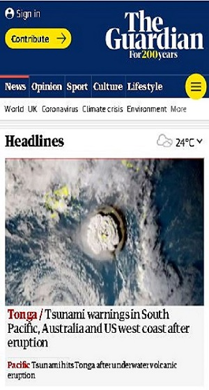
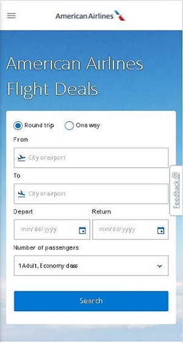
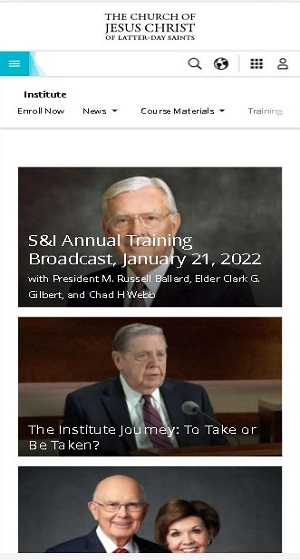

Luis Carlo R. Neres
Design Principles Document
Visual Hierarchy
The Guardian
theguardian.com/international The Visual Hierarchy is present on this site by presenting the content with different heading levels, from top to bottom. The navigation menu also directs the visitor to the topic he is looking for. The central image is also used to capture the visitor's attention.
White Space and Clean Design
American Airlines
aa.com/en-us/flights The American Airlines website exemplifies the White Space and Clean Design principle. The page contains only the elements necessary for a flight search. The elements are well distributed on the screen and the empty spaces are very well used.
Alignment
The Church of Jesus Christ - Institute
churchofjesuschrist.org/si/institute The Church website is a great example of alignment. The menu items are well distributed, the elements containing the stories follow a horizontal alignment pattern. The site also uses Media Object Alignment to align the media objects in the heading of the page.